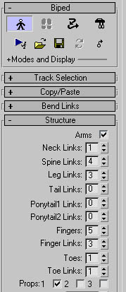
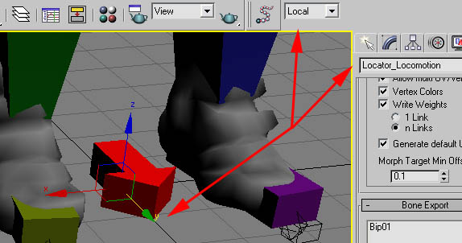

Элемент буровой установки локатора передвижения
Локатор движения или Locator_Locomotion, как называется узел, используется в движке для описания логического движения и ориентации анимации. Этот узел необходимо добавить к движениям, которые перемещаются неравномерно, например, к переходу начала или остановки, который имеет пики и спады ускорения.
- Скелет должен содержать кость Locator_Locomotion только для анимаций, которые обязаны ее содержать. Для циклов в этом нет необходимости, поскольку все анимации обрабатываются с помощью локатора для удобства пакетной обработки в дальнейшем.
- В бипеде самый простой способ добавить этот узел — включить режим фигуры и создать опору. Таким образом, анимацию локатора можно сохранить внутри файла двуногих, что упрощает пакетный экспорт.
- На следующем изображении показано, как добавить реквизит. Просто войдите в режим фигуры, перейдите в меню структуры двуногого и установите флажок. Реквизит: 1.

- Убедитесь, что кость обращена к положительной оси Y в локальной системе координат.
- На следующем изображении представлен контрольный список необходимых пунктов, указанных выше. Название, система координат и направление Y+.
